7주차 · 이미지 분석 2
생성 모델
없던 이미지를 만들어 낸다는 것은 무엇을 학습한 것인가
한양대학교 도시공학과 · 21 GAN.ipynb · 24 Autoencoder.ipynb · 25 diffusion.ipynb
오늘의 질문
없던 이미지를 만들어 낸다는 것은
무엇을 학습한 것인가?
이미지를 외운 것이라면 새 이미지가 나올 수 없다. 그럼 무엇을 배운 것인가.
1부 · 손실을 보는 눈을 바꾼다
값을 맞댈 것인가, 분포를 맞댈 것인가
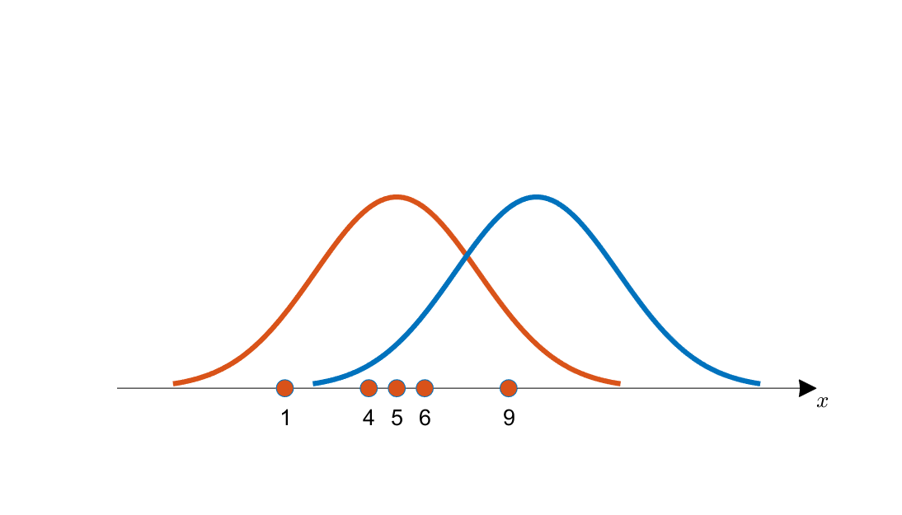
관측값 1·4·5·6·9 와 두 개의 후보 정규분포
최대우도법
어느 분포가
이 점들을 설명하나
1이 나올 확률 × 4가 나올 확률 × 5 × 6 × 9
— 이 값이 가장 큰 분포를 고른다.
파란 쪽에서 1과 4를 뽑을 확률은 아주 낮다. 곱하면 작아진다.
오늘 전체의 전제
분포를 알면
거꾸로 뽑을 수 있다
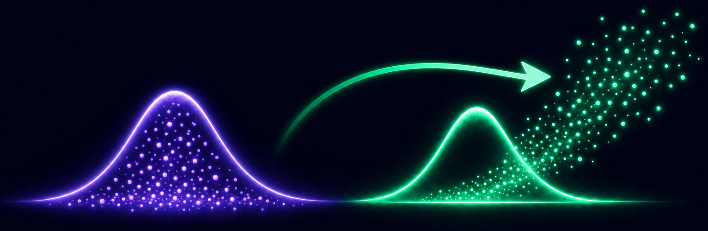
관측점에 맞춘 분포에서 새 점들이 거꾸로 뽑혀 나오는 그림
값을 맞히는 모델
그 값밖에 못 낸다. 외운 것을 다시 내놓는 데 가깝다.
분포를 맞히는 모델
그 분포에서 새로 뽑을 수 있다. 그게 곧 생성이다.
이미지 픽셀값도 고정된 값이 아니라 어떤 분포를 따르는 관측값으로 볼 수 있다.
잠깐 — 코드 길이 이야기
듣고 나면 크로스 엔트로피가 그냥 이해된다
네 단어를 적는 데 31비트가 들었다. 길이가 길수록 비용이다 — 이 배정이 합리적인가?
자주 나오는 것부터 짧은 코드를
규칙은 그대로, 나눠 주는 순서만 바꾼다
31비트가 22비트가 됐다 — 29% 를 줄였는데 정보는 하나도 잃지 않았다.
한 글자에 평균 몇 칸을 쓰는가
확률 × 길이를 전부 더한 값
확률이 큰 글자에 짧은 칸을 줬더니 평균이 내려갔다. 이 가장 효율적인 평균 길이가 엔트로피다.
그럼 어떤 모양이어야 하나
가로축 P(x) · 세로축 그 글자에 줄 길이
두 사건이 같이 일어날 확률은 곱해진다. 그런데 적는 길이는 더해져야 한다.
곱을 합으로 바꾸는 함수는 로그뿐이다 — 그래서 −log 다.
이름을 붙인다
이것을
엔트로피라 부른다
확률이 1에 가까우면 값이 거의 0 — 짧은 코드.
확률이 0에 가까우면 값이 무한대 — 긴 코드.
H(P) = − Σ P(x) · log P(x)
확률 × 길이를 전부 더한 것. 효율적일수록 작아진다.
entropy

y = −log x — 0 에 가까울수록 무한히 커지고 1 에서 0 을 지나 아래로 내려간다
y = − log x
p(x)
분포가 뾰족할수록 엔트로피가 작다
마우스를 좌우로 움직여 보자
엔트로피는 두 가지를 동시에 재는 값이다 — 한 글자당 필요한 최소 비트 수, 그리고 그 분포가 얼마나 예측하기 어려운지.
확률은 실제에서, 길이는 예측에서
Cross Entropy

크로스 엔트로피 공식 — 앞은 실제 분포 확률, 뒤는 예측 분포의 −log
이 한 줄이 전부다. 앞은 실제 분포에서, 뒤는 예측 분포에서 가져온다.
예측을 틀어 보자
실제 분포는 고정 · 예측 분포만 마우스로 움직인다
아무리 잘 맞혀도 엔트로피 아래로는 못 내려간다. 그 위에 얹히는 빨간 부분이 어긋나서 더 쓴 양이다.
세 가지 경우로 정리하면
그래서 손실로 쓸 만하다
두 분포가 어긋난 만큼 전체 길이가 비효율적으로 늘어난다. 그 늘어난 양이 곧 손실이다.
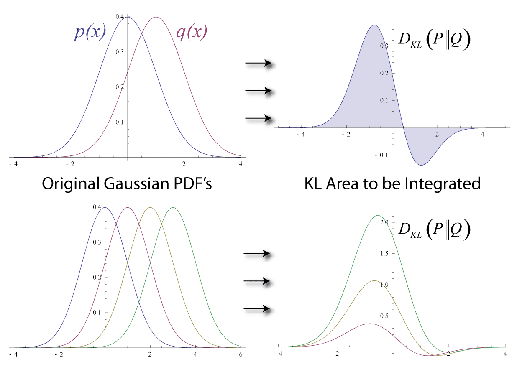
두 정규분포와 그 사이의 KL 면적
KL Divergence
더 쓴 만큼만
남긴다
KL = 크로스 엔트로피 − 엔트로피
KL 이 크면 두 분포가 멀리 떨어져 있다.
KL 은 방향이 있다 — P→Q 와 Q→P 가 다르다. 대칭으로 만든 것이 JSD 이고, GAN 의 손실이 그것이다.
1부 정리
지금부터는 분포 대 분포다
뒤에 나올 모든 이론이 이 가정 위에 있다. 여기서 놓치면 나머지가 흐려진다.
이미지에서는 무엇과 무엇을 맞대는가
픽셀 히스토그램이 아니다
2부 GAN — 판별자를 세워서 잰다
3부 오토인코더 — 복원 오차와 잠재분포의 KL 로 잰다
4부 확산 — 잡음을 얼마나 잘 맞혔는지로 잰다
셋 다 분포 차이를 숫자 하나로 바꿔 역전파한다. 재는 방법이 다를 뿐이다.
2014년 논문, 2018년쯤 대유행. 이미지 생성을 유행시킨 사실상의 태초 모델이다.
둘 다 이미
배운 것이다
판별자 — 5주차 외벽 모델 그대로. 합성곱 몇 번, 시그모이드로 0/1.
생성자 — 6주차 U-Net 의 올라오는 길. 난수 100개를 전치 합성곱으로 키운다.
진짜 이미지는 시장에서 긁어 오면 된다. 가짜 이미지가 없어서 생성자가 필요한 것이다.
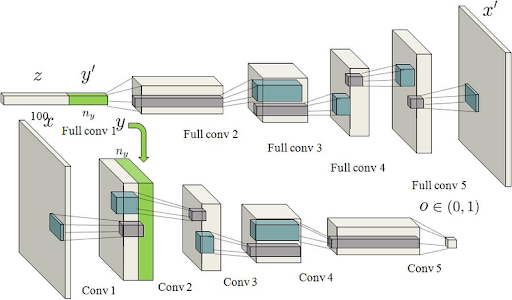
DCGAN 생성자 — 난수 100개에서 이미지까지 전치 합성곱으로 키운다
첫 번째 차례
생성자를 잠그고 판별자를 가르친다
잠근 생성자로 가짜 만 장을 찍어 두고, 진짜 만 장을 가져온다.
진짜에 1, 가짜에 0 — 5주차 벽돌·대리석과 똑같은 문제다.
두 번째 차례 · 여기가 제일 헷갈린다
판별자를 잠그고 생성자를 가르친다
가짜 이미지에 정답을 0 이 아니라 1 로 준다 — 판별자가 속게 만드는 방향.
판별자는 통로일 뿐이다. 기울기만 지나가고 가중치는 그대로다.
둘을 번갈아 돈다
수십 수백 번
서로를 밀어 올린다. 대신 잠갔다 풀었다 하느라 느리고 불안정하다 — 뒤의 한계에서 다시 나온다.
논문의 그 한 줄
min G, max D — 둘이 경합한다
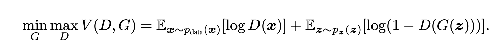
GAN 의 minmax 목적함수
D 는 최대로
진짜에 1, 가짜에 0 을 주도록.
G 는 최소로
판별자가 속도록. 손실은 JSD 를 쓴다.
실습
난수 100개에서
필기체까지
처음 나오는 이미지는 아무 의미 없는 잡음이다. 입력도 난수, 가중치도 난수니 당연하다.
오른쪽 그림은 움직인다 — 30바퀴를 도는 동안 잡음이 필기체로 잡혀 간다. 손실은 binary cross entropy.
런타임을 GPU 로 바꿀 것 — 21 GAN.ipynb
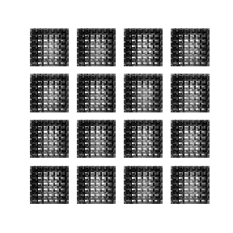
에폭이 지나며 잡음이 필기체로 잡혀 가는 GAN 학습 과정
조건을 붙이면 — Pix2Pix
23 GAN_Pix2Pix.ipynb

Pix2Pix — 스케치를 주면 진짜 같은 신발을 그린다
6주차의 항공영상 ↔ 토지피복 라벨 쌍이 정확히 이 구조에 맞는다.
라벨에서 항공영상을 그리거나, 그 반대로.
한계
잘 만들지만, 배운 것만 만든다
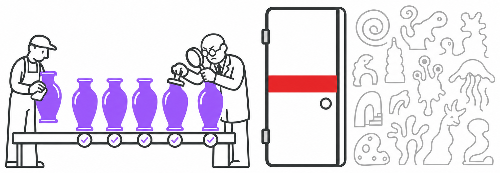
똑같은 도자기만 완벽하게 찍어 내는 공방과, 닫힌 문 너머의 낯선 형상들
학습이 오래 걸린다
경합 구조라 잠갔다 풀었다를 반복한다. 느리고 불안정하다.
다양성이 없다
판별자가 학습 이미지 기준으로 진짜를 판단한다 — 배운 것 밖을 못 만든다.
이 한계가 다음 두 모델의 출발점이다.

오토인코더 — 이미지에서 잠재변수로, 다시 복원 벡터로
가운데 그 작은 벡터가 잠재변수다 — GAN 의 z 와 같은 이름이고, 5주차 피처 벡터와 같은 자리다.
한 층씩 쌓아 올린다
깊은 망을 한 번에 학습시킬 수 없던 시절의 방법
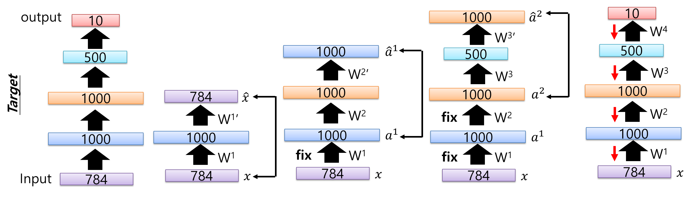
784→1000→1000→500→10 을 한 층씩 따로 학습해 쌓아 올리는 과정
한 칸만 먼저 — 784→1000→784 로 복원해 W¹ 을 얻는다
fix 로 잠그고 그 위에 다음 칸을 올린다 — 조금 전 GAN 의 그 잠금이다
마지막에 전부 이어 붉은 화살표로 한 번 미세조정한다
층마다 표현을 따로 배운다는 이 발상이 사전학습과 전이학습으로 이어진다.
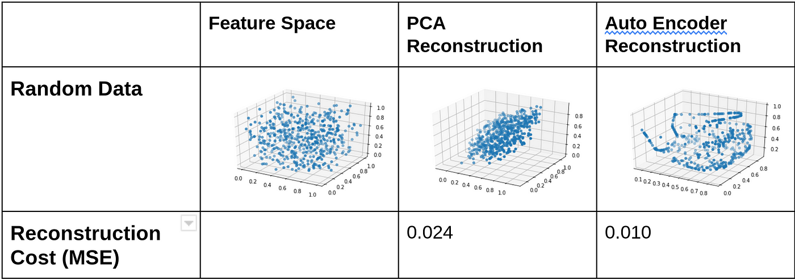
같은 데이터를 PCA 와 오토인코더로 복원했을 때의 오차 비교
2주차 PCA 와
선형이냐
비선형이냐
PCA 는 직선 하나로 줄인다. 오토인코더는 같은 일을 휘어진 면으로 한다.
같은 데이터 복원 오차 — PCA 0.024, 오토인코더 0.010. 절반 이하다.
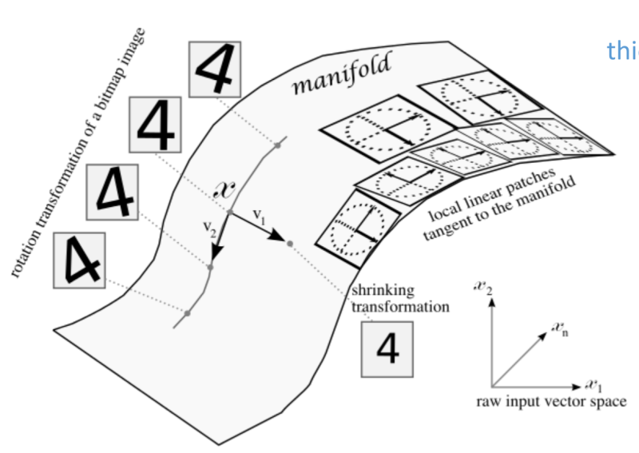
원본 공간과 그 안에 휘어져 놓인 매니폴드
왜 이렇게 줄여도 되나
실제 데이터는
좁은 면에만 있다
키 180에 몸무게 2킬로그램인 사람은 없다. 그런 조합에는 데이터가 아예 없다.
MNIST 도 가장자리는 거의 다 검다. 그 차원은 의미가 없다.
그 좁고 휘어진 면이 매니폴드다. 오토인코더가 찾는 것이 이 면이다.
어느 자로 재느냐에 따라 답이 뒤집힌다
직선 거리 vs 매니폴드 거리
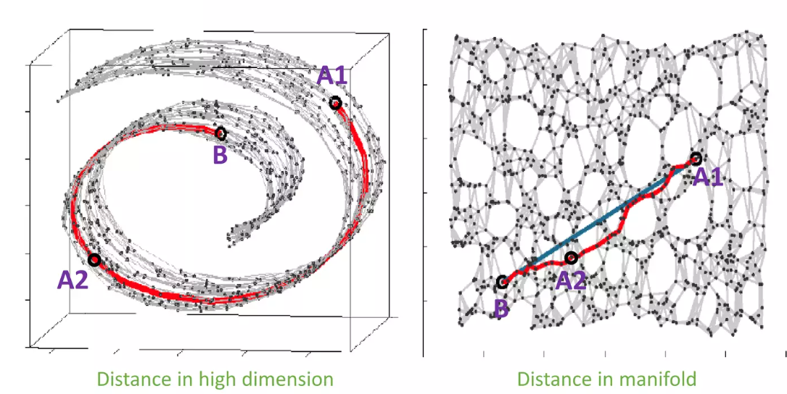
고차원에서의 거리와 매니폴드에서의 거리 비교
같은 점들인데 왼쪽에서는 A1 과 B 가 가깝고, 오른쪽에서는 A1 과 A2 가 가깝다.
중간을 잘못 고르면 사람이 아니게 된다
매니폴드를 벗어난 이미지

A1 과 A2 의 중간 — 직선으로 잡은 B 와 매니폴드를 따라 잡은 C
직선으로 잡은 중간은 있을 수 없는 자세다. 매니폴드를 따라 잡아야 실제로 있을 법한 자세가 나온다.
오토인코더는 생성 모델이 아니다
그림은 비슷한데 하는 일이 다르다
뽑으려면 잠재공간에 미리 정해 둔 분포가 있어야 한다.
표준정규분포라고 못 박아 두면 그냥 거기서 뽑으면 된다 — 그 못 박는 방법이 VAE 다.
VAE — 점 대신 분포를 낸다
Auto-Encoding Variational Bayes · 2013
① 점이 아니라 동네 — 인코더가 μ 와 σ 를 낸다
② 뽑기는 미분이 안 된다 — z = μ + σ·ε 로 바꿔 길을 튼다
③ 손실이 둘 — 복원 오차 + KL. 1부의 그 KL 이다
결과
그래서 잠재공간이
이렇게 채워진다
KL 이 잡아당긴 덕에 빈 곳이 거의 없다. 아무 데나 뽑아도 된다.
VAE — KL 로 표준정규분포 쪽으로 끌어당겨 채웠다.
AAE — KL 대신 판별자를 붙여 원하는 모양으로 밀어붙인다. 2부의 그 판별자다.

Adversarial Autoencoder 와 Variational Autoencoder 의 잠재공간 분포
4부 · 확산 모델
만드는 법 대신
망가뜨리는 법을 배운다
이미지를 만드는 일
아주 어렵다 — 2부와 3부가 이걸 붙들고 씨름했다.
이미지를 망가뜨리는 일
아주 쉽다 — 잡음만 조금 얹으면 된다.
쉬운 쪽을 배워서 거꾸로 돌린다. 지금 우리가 쓰는 그림 생성기가 전부 이 뼈대다.
발상은 물리에서 왔다
연기는 퍼진다.
그럼 거꾸로 돌리면 되지 않나
완전히 잡음인 상태에서 점점 현실에 있는 이미지에 가깝게 만든다.
잡음을 걸고, 한 칸만 되돌린다
약 1,000 단계

원본 이미지에서 완전한 잡음까지, 그리고 그 반대 방향
그 한 칸을 맡은 것이 U-Net 이다
6주차에 배운 그 구조
U-Net · 2015 — 6주차에 쓴 그 그림

U-Net 원논문 도해 — 내려가는 길과 올라오는 길, 그리고 가로로 건너뛰는 선
학습 데이터는 실시간으로 만든다 — 128장을 가져와 무작위 단계의 잡음을 그 자리에서 입힌다. 그래서 사실상 무한하다.
셋을 다 갖기 어렵다
Generative learning trilemma · 2021

화질·다양성·속도 세 꼭짓점과 그중 둘씩만 잡는 세 계열
확산은 화질과 다양성을 같이 잡았다. 남은 문제는 느리다는 것 — 천 번을 돌려야 한다.
천 번을 어디서 돌릴 것인가
Latent Diffusion · 2021
픽셀 위가 아니라 3부에서 배운 그 잠재공간 위에서 돌린다.
다 끝난 다음에 디코더로 한 번만 키워 이미지로 되돌린다 — 3부와 4부가 여기서 합쳐진다.
Stable Diffusion 의 구조
오토인코더 + 확산 + CLIP — 배운 것이 전부 모인다
VAE — 3부에서 배운 것. 8배로 눌렀다가 마지막에 한 번 키운다
U-Net — 4부에서 배운 것. 잠재공간에서 한 칸씩 잡음을 걷는다
CLIP — 문장을 벡터로. 그 벡터가 U-Net 안으로 들어가 방향을 잡는다
문장은 크로스 어텐션으로
그림의 각 자리가 묻고 문장의 각 단어가 답한다. 9주차 어텐션이 여기서 그대로 쓰인다.

Stable Diffusion 이 문장 하나로 그려 낸 인물 사진 두 장
프롬프트를 길게 쓰면 디테일이 살아나는 이유가 여기 있다 — 단어마다 붙는 자리가 다르다.
2022년 8월 22일
논문이 아니라
가중치를 풀었다
그때까지 이런 모델은 회사 서버 안에 있었다. 우리는 웹으로 부탁만 할 수 있었다.
이건 내려받아서 내 노트북에서 돌린다. 며칠 만에 파생 모델과 도구가 쏟아졌고, 허깅페이스가 그 유통 창구가 됐다.
우리가 연구실에서 이걸 만질 수 있는 이유도 오픈 가중치이기 때문이다.

허깅페이스 — 오픈소스 모델 유통 창구

Stable Diffusion 이 만들어 낸 이미지
현장에서는
3천만 원이
500원이 됐다
화장품 포스터 한 번 — 모델, 디자이너, 사진사가 붙어 3천만 원.
지금은 버튼 한 번, GPU 비용 500원. 글로벌 화장품 회사들이 생성 알고리즘 회사를 전 세계에서 인수하고 있다.
그럼 우리 분야에서는 무엇이 대체되고 무엇이 남는가.
Stable Diffusion 이 생성한 이미지
3분 · 옆 사람과
하나만 골라 이야기해 보자
Q1 생성 모델이 학습한 것이 분포라면, 그 분포가 편향돼 있으면 무슨 일이 생기는가?
Q2 우리 도시 데이터에서 “있을 수 없는 중간값” 이 만들어지는 경우는 언제인가?
Q3 6주차 항공영상–라벨 쌍으로 Pix2Pix 를 돌린다면, 어느 방향으로 만드는 것이 쓸모 있겠는가?
오늘의 질문에 답한다
외운 것이 아니라 분포를 배웠다
셋을 관통하는 것은 1부의 전환이다 — 값이 아니라 분포를 맞댄다.
다음은 중간고사. 그다음 9주차부터는 순서가 있는 데이터로 간다. 예습: 22 timeseries.ipynb